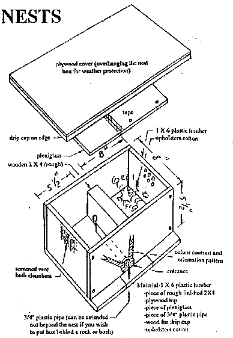
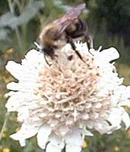

Construction:Scrap plywood (1/2 inch to 3/4 inch thickness.)
A rough cut 2 x 4 (such as cedar) about 6½ inches long.
3/4 inch pvc pipe, 6 to 8 inches long.
1/8" x 8" x 15" clear acrylic panel (optional, but practical)
Front and back each 5½" high x 15" wide
Sides each 5½" high x (8" minus two times the thickness of the material used), e.g. if using 3/4" plywood, the sides pieces will be 6½" wide.
Bottom 10" x 15"
Top about 14" x 17"
Acrylic panel 8" x 15"
Drill vent holes near the top of the side panels. Cover with fine screening which should be glued or stapled firmly into place. Assemble side panels to front and back panels to form a box as in the diagram. Fasten the box to the bottom plate with the landing area extending to the front as shown. The diagram shows that a 3/4" hole should be drilled through the 2 x 4 connecting the two chambers about an inch from the back of the box. Fit the roughly surfaced 2 x 4 to the bottom plate, front panel, and back panel, so that two chambers are formed. One chamber should be 5½" wide and will serve as a vestibule. The brood chamber will be 8" wide. There should be 2" of air space above the 2 x 4. Surfaces of the 2 x 4 need to be rough so that the bumblebees can climb over it with ease.
Drill a hole in the front panel to accommodate the pvc pipe. The pipe should extend from the front panel up to the hole in the 2 x 4. Before installing the pvc pipe, spray the interior of the pipe with black paint. Spring queens will be looking for mouse holes, so you want to minimize reflected light inside the entrance pipe. The pipe should be held in place by a tight fit in the front panel and by some glue or caulk between it and the bottom plate. Place a small quantity of upholsterer's cotton in the brood chamber.
The acrylic panel need not be installed unless you wish to inspect an established colony. Certain species such as B. fervidus and B. pennsylvanicus are known to prevent such inspections. Most others range from "slightly more forgiving" all the way to "quite docile." I prefer to install the panel so that an energetic skunk or racoon who is large enough to remove the top cover will still have no access to my bumblebees.
The top cover should have some type of drip cap installed all around the perimeter of the underside so that no water could run toward the box. This could be done with 1/4" to 3/8" quarter round molding or any wood or metal scrap. The exterior portions of the box should be sealed and painted because there is no way of knowing how many years before any particular box gets a colony. There is no need to finish the interior of the box, because it is protected from the weather and should you be fortunate to attract a colony, it will be necessary to discard the box at the end of the season of actual use. Discarding a used nest box is important because there is no practical way to sterilize a wood box. There are a wide variety of parasites which feed off bumblebees and the nest contents during the season. Eggs of these parasites may be deposited in cracks and crevices. Nest boxes constructed of metal or plastic could probably be cleaned with steam or chemicals. Wood boxes are quickly made, and easy to replace.
The boxes should be placed in full or partial shade. The entrance hole should be from 4" to 10" off the ground in an area where there is no possibility of flooding the entrance. The nest box should be isolated from the ground by brick, stone, scrap lumber, etc. to avoid excessive moisture. Place 5 or 6 bricks on the cover to insure that weather and animals cannot remove it. I suggest that you select an area where you will not be mowing grass within 10 ft. of the entrance. If desired, you can cover the entire installation with wood chips or other mulch providing that vent holes are fully exposed. This would assist the bumblebees in regulating temperature extremes.
The next requirement is patience. If no colony has been established by the end of July, return the nest box to storage until next season. Your nest boxes will last a long time since they will only be exposed to the weather during April, May, June, and July each year until they get a colony. Bumblebees emerging from hibernation in early spring are fertilized queens. They may search all day long for up to two weeks to find an "ideal" nest site. A spring queen with pollen in her pollen baskets has already found her nest site. Avoid checking the nest box for activity. If a queen is disturbed before really settling-in, she will most likely move on. If you get one box in three occupied, you have been fortunate indeed. Reinstall your nest boxes every year, and hope for the best. Continually add to your plantings of nectar producers preferred by bumblebees. See a list of such plants. Be sure to include some plants that are blooming at the same time that the spring queens are emerging.
Some of the above has been adapted from materials developed by the B. C. Fruit Testers Association, Post Office Box 48123, 3575 Douglas Street, Victoria, B. C., V8Z 7H5, Canada.
If you have any questions about Bombus biology or identification of bumblebees working your property, do a web search. There is a considerable volume of information on the WWW under the search terms: Hymenoptera, Pollinators, Bombus, and combinations of those terms. For more information on Bumble Bees, check out my list of native pollinator references.
